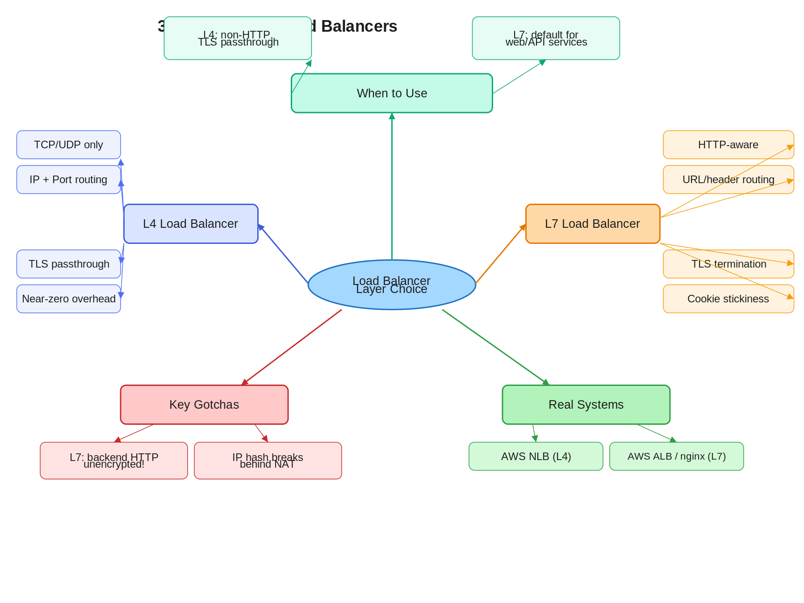

4.1 L4 vs. L7
Load Balancers
01 Goal of This Subtopic
- Be able to distinguish L4 from L7 load balancers by the OSI layer they operate on, what information each can see, and the architectural implications of that difference.
- Understand when to choose one over the other in an interview design, and be able to articulate the trade-offs confidently without hedging.
- Explain TLS termination and its security model — what the L7 LB exposes, and what mitigations exist.
- Identify when L4 is the only viable option (non-HTTP protocols, TLS passthrough) and explain why L7 cannot substitute.
02 What Mastery Looks Like
- Can explain the difference between L4 and L7 load balancing in under 60 seconds using a concrete example, without notes.
- Can select the right LB type (L4 or L7) given a specific system requirement and justify it in terms of what information is available at each layer.
- Can describe exactly how TLS termination changes the security model and what the two correct mitigations are.
- Can identify when L4 is the only viable option (non-HTTP protocols, TLS passthrough) and explain why.
- Can name at least two production systems that use each type and describe how they use it.
03 Study Phases to Achieve Mastery
Goal: Read deeply enough that you could explain the concept without the doc.
- Read AWS Documentation: ALB vs. NLB comparison — docs.aws.amazon.com/elasticloadbalancing/latest/userguide/how-elastic-load-balancing-works.html
- Read nginx HTTP Load Balancing Guide — docs.nginx.com/nginx/admin-guide/load-balancer/http-load-balancer/
- Read ByteByteGo: System Design Interview — Chapter on scalability covering L4/L7 in real interview problems
- Read HAProxy Documentation: The Four Essential Sections of an HAProxy Configuration — haproxy.com/documentation/
- Read Cloudflare Blog: How we scaled our load balancer — blog.cloudflare.com
- Read Sections 5–9 (Core Definition to How It Works) carefully — don't skim
- Re-read the Cheatsheet (Section 4) and try to recite it from memory after
Goal: Reproduce the knowledge in your own words without looking.
- Close the doc — write out the Core Definition from memory, then compare
- Explain First Principles out loud — what pain existed before L4/L7 distinction mattered?
- Reconstruct the L4 and L7 happy paths step by step from memory
- Restate each Trade-off row in your own words — if you can't explain the cost, you don't own it yet
Goal: Connect to real systems and simulate interview scenarios.
- Verify each Real-World Example independently and add anything missed to My Notes
- Practice Interview Application out loud — trigger phrases + trade-off statement verbatim
- Work through Common Misconceptions — explain WHY each is wrong, not just that it is
- Trace Relationships to Other Concepts without looking
Goal: Confirm you actually own it, not just recognize it.
- Answer every Self-Check Quiz question out loud without notes
- Recite the Cheatsheet from memory — if you can't, re-do Phase 2
- Tick off Mastery items — only if you can demonstrate on demand, not just if it sounds familiar
- Teach this concept for 2 minutes to an imaginary interviewer without hesitation or notes
04 Cheatsheet

05 Core Definition
06 Core Concepts
GET /health) and check for a 200 response. L7 health checks catch application-layer failures — a crashed app server that still accepts TCP connections — that L4 checks entirely miss.07 First Principles — Why Does This Exist?
Before load balancers, scaling a service meant scaling the single machine it ran on. When a single machine hit its ceiling, the only option was vertical scaling — bigger hardware. Horizontal scaling required a way to distribute traffic across machines while presenting a single address to clients.
The first load balancers were simple: they operated at L4, hashing connection tuples to backend IPs. This worked well until applications needed smarter routing — routing /api/users to one microservice and /api/orders to another, or routing 5% of traffic to a canary deployment, or maintaining session affinity based on a user's login cookie. None of this is possible at L4 because the LB cannot see the application-layer content.
L7 load balancing emerged to solve the intelligence gap: give the LB enough context (the full HTTP request) to make routing decisions that align with application semantics. The cost is that the LB must now terminate connections, parse HTTP, and re-establish connections to backends — which is why L4 still exists for cases where that overhead or protocol boundary is unacceptable.
08 Mental Models
Model 1: The Doorman vs. The Concierge
An L4 load balancer is a doorman: they check what floor you're going to (IP/port) and send you to the right elevator — fast, no questions asked, no knowledge of what you need when you get there. An L7 load balancer is a concierge: they read your request, understand what you need ("I want the sushi restaurant on the 3rd floor"), and route you accordingly. The concierge is smarter but slower and must be trusted with your information. Where it breaks down: the concierge implies seeing everything — but an L7 LB only sees HTTP content, not encrypted payloads if TLS passthrough is used.
Model 2: The Envelope vs. The Letter
L4 routes based on the outside of the envelope (to/from address). L7 opens the envelope, reads the letter, and routes based on the content. You can sort mail incredibly fast at L4 because you never open anything. But if you need to route "all letters about billing to the billing department," you must open and read — that's L7. Where it breaks down: this implies L7 always does more work. In practice, modern L7 LBs are highly optimized and the overhead for typical web traffic is negligible below millions of RPS per node.
Model 3: The OSI Stack as an Information Tax
Every layer you go up the OSI stack costs more compute (you must parse more of the packet) but gives you more information to make routing decisions. L4 pays almost no tax — just a hash table lookup. L7 pays TLS termination + HTTP parsing but can see everything the application sends. Think of it as buying routing intelligence with compute. When the tax is too high: ultra-low-latency financial systems or very high-throughput UDP streams (gaming, video) cannot afford the L7 tax.
09 How It Works — Mechanics
L4 — Happy Path
- 1Client sends a TCP SYN to the VIP (e.g.,
10.0.0.1:443). - 2The L4 LB computes a backend selection based on a hash of
(src_ip, src_port, dst_ip, dst_port)or a round-robin counter. - 3The LB records the mapping in its connection table:
{client_ip:port → backend_ip:port}. - 4It rewrites the destination IP/port on the packet (DNAT) and forwards the SYN to the selected backend.
- 5All subsequent packets on this TCP connection are forwarded to the same backend using the connection table — no re-evaluation per packet.
- 6On TCP FIN/RST, the LB removes the entry from the connection table.
L7 — Happy Path
- 1Client establishes a TLS connection to the VIP. The L7 LB handles the TLS handshake, presenting its own certificate.
- 2The LB reads the plaintext HTTP request: method, URL, headers (including
Host,Cookie, custom headers). - 3It evaluates routing rules: path prefix, header match, cookie value, and selects a backend pool.
- 4It reuses a pooled TCP connection to the backend (or opens a new one) and forwards the HTTP request, adding
X-Forwarded-ForandX-Forwarded-Proto. - 5The backend processes the request and returns a response, which the LB streams back to the client over the original TLS connection.
Key Parameter Reference
| Parameter | L4 Value | L7 Value | Notes |
|---|---|---|---|
| Routing decision input | IP + port | URL, headers, cookies | Core distinction |
| TLS handling | Passthrough (optional) | Terminates TLS | L7 sees plaintext HTTP |
| Health check | TCP handshake | HTTP GET /health | L7 catches app crashes |
| Retry on failure | Not possible | Transparent retry | L7 advantage for idempotent ops |
| Sticky sessions | IP hash only | Cookie-based | L7 survives NAT + IP change |
| Protocol support | Any TCP/UDP | HTTP/HTTPS only | L4 required for DB, gRPC raw, UDP |
10 Real-World System Examples
| System | How This Concept Applies | Notes |
|---|---|---|
| AWS Application Load Balancer (ALB) | L7 LB: routes by path, host header, query string; sticky sessions via cookies; terminates TLS | Default choice for web/API workloads on AWS; integrates with WAF for edge security |
| AWS Network Load Balancer (NLB) | L4 LB: ultra-high throughput (millions of RPS); TLS passthrough option; preserves source IP natively | Used when ALB latency overhead is unacceptable or for non-HTTP protocols (databases over TCP) |
| nginx | Acts as both L4 (via stream module) and L7 (via http module) — configured per use case |
Widely used as L7 reverse proxy for microservices; supports SSL termination and header manipulation |
| HAProxy | Mature L4 and L7 LB; L7 mode supports ACL-based routing on any HTTP header | Used at high scale (GitHub, Stack Overflow) for deterministic, predictable performance |
| Envoy Proxy | L7 load balancer and proxy serving as the data plane in service meshes (Istio) | Supports sophisticated L7 routing, circuit breaking, retries, and distributed tracing natively |
| Cloudflare | Global anycast L7 LB; terminates TLS at 200+ PoPs; applies WAF, bot mitigation, and caching at L7 | Operates as combined CDN + L7 LB + DDoS mitigation layer — all requiring L7 content inspection |
11 Trade-offs
| Benefit | Cost / Limitation |
|---|---|
| L7 enables content-based routing (path, header, cookie) | L7 must parse HTTP for every request — higher CPU than L4's hash table lookup |
| L7 TLS termination centralizes certificate management and offloads crypto from backends | Backend traffic is unencrypted; requires trusted internal network or TLS re-origination complexity |
| L7 retry on failure is transparent to the client, improving resilience | L7 retry can cause duplicate side effects if the backend operation is not idempotent |
| L4 is protocol-agnostic — works for any TCP/UDP service with near-zero overhead | L4 cannot distinguish between multiple services on the same IP; requires separate ports per service |
| L4 preserves the original client IP natively via DNAT | L7 requires the X-Forwarded-For header to pass the original client IP; backends must be configured to trust it |
| L7 performs HTTP health checks, catching app-layer failures that L4 misses | L7 health check requests add overhead; misconfigured health endpoints create false negatives |
12 Interview Application
Trigger Phrases
- "Walk me through how you'd design the load balancing layer for this system."
- "How would you route traffic to different microservices?"
- "The system needs to support A/B testing / canary deploys."
- "We need to support WebSocket connections at scale."
What You Say
Trade-off Statement (memorize this)
13 Common Misconceptions & Gotchas
14 Relationships to Other Concepts
| Relationship | Concept | Why |
|---|---|---|
| Builds on | Topic 3 — Stateless Services | Stateless backends make L7 load balancing trivial; stateful backends require sticky sessions, which only L7 enables cleanly via cookies |
| Enables | 4.2 Routing Algorithms | The routing algorithm choice (round robin, least connections, IP hash, weighted) only matters in the context of which LB type is in use and what information it has |
| Enables | 4.6 Sticky Sessions | Sticky sessions only work reliably at L7 with cookie-based affinity; L4 IP hash is a fragile fallback |
| Tension with | Topic 3 — Stateless Services | L7 LBs make it easy to add cookie-based sticky sessions, which reintroduces statefulness into the service layer and undermines horizontal scalability — the ideal is stateless backends that need no affinity at all |